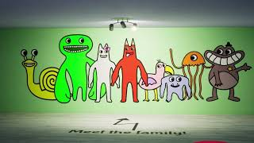

Навигация по странице
Навигация на другую страницу
Garten of banban
Зайдите в детский сад Банбана, и вы обязательно заведёте себе друзей. Исследуйте таинственное учреждение и не потеряйте свою жизнь и рассудок. Раскройте ужасающую правду, скрывающуюся за этим местом, но будьте осторожны, так как вы далеко не одиноки...
«Сад Банбана» расположен в детском саду Банбана. Детский сад закрыли в связи с недавними случаями исчезновения всех посещающих детский сад детей. В игре Игрок, который предположительно является родителем, который, устав от того, что никто не может найти его пропавшего ребенка, решил пойти в д
После начала игры вы сначала увидите комнату, полную компьютеров. Внизу экрана написано: «Для родителя, ищущего своих детей, это деликатное дело. Нажмите на часы, чтобы перевести время», а для продвижения нужно нажать несколько раз на часы Джамбо Джоша рядом с текстом. Сначала вы появляетесь во Внешнем секторе. Синяя ключ-карта находится на стойке регистрации. Используйте её на считывателе синих ключей, чтобы попасть в комнату с дронами. Соберите контроллер, в кафетерии есть батарейки для него. Заставьте дрона нажать кнопки, и дверь откроется, за которой вы увидите птица Опила. Нажмите на Синий считыватель карточек-ключей, чтобы осветить игровую площадку. Найдите все шесть яиц, чтобы получить Жёлтую карточку-ключ. Нажмите на жёлтый считыватель карточек-ключей, чтобы активировать кнопку, нажмите на неё с помощью дрона, и дверь к молоту откроется. Используйте молоток, чтобы убрать доски и попасть в бассейн с шариками, затем нажмите на жёлтые считыватели карт-ключей, чтобы переместить подъёмники. Решите головоломку «Какого цвета персонаж» и получите Оранжевую карточку-ключ. Птица Опила будет преследовать вас, используйте дрон, чтобы нажать кнопку, в конце нажмите на оранжевый считыватель карточек. Идите в Оранжевую комнату и решите последнюю головоломку. Затем идите к рабочему лифту. Вы встретите Джамбо Джоша и закончите игру.
Джамбо Джош Джамбо Джош (англ. Jumbo Josh) - один из первых талисманов в Garten of Banban. Он является второстепенным антагонистом в Garten of Banban, Garten of Banban 2, Garten of Banban 4, Garten of Banban 3, и второстепенным протонгагистом в Garten of Banban 7.
Птица Опила (англ. Opila Bird) — розовая птица, похожая на фламинго, покрытая отпечатками ладоней.
- главный враг 6-8части сэр дададу
- главный друг 0-8части банбан
харастеристика Банбана
| Пол | Мужской |
| цвет | красный |
| возвраст | неизвесен |